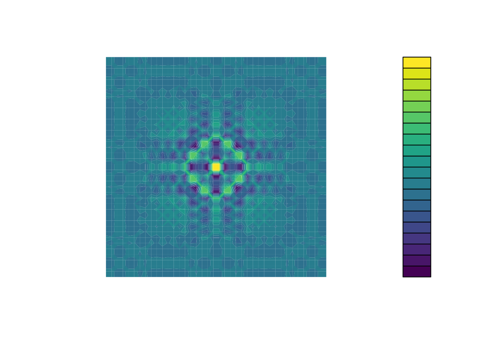
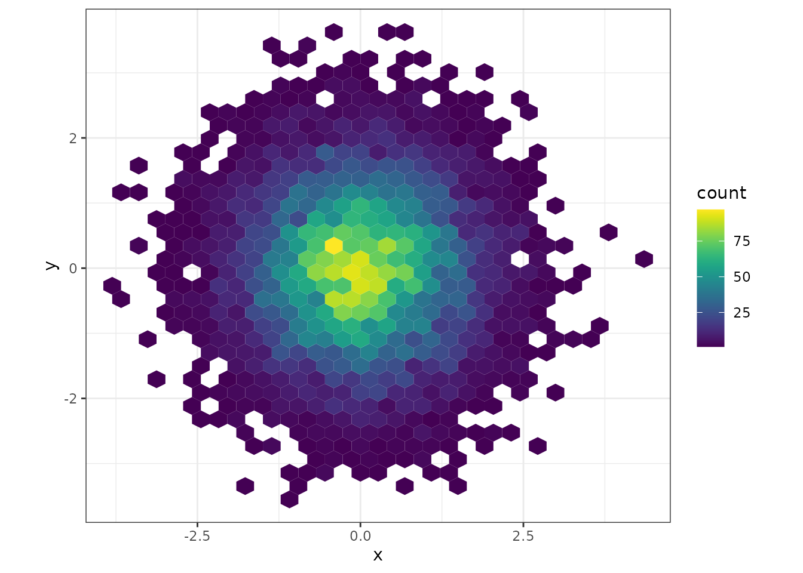
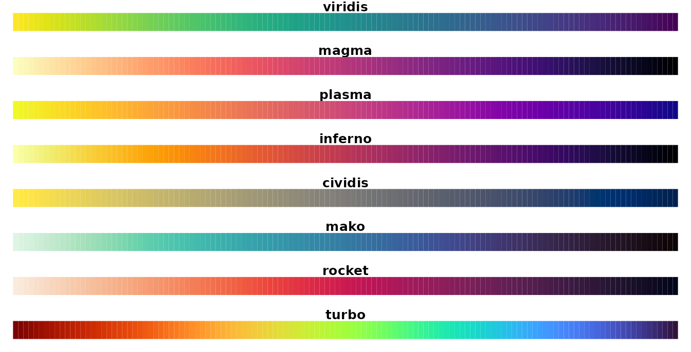
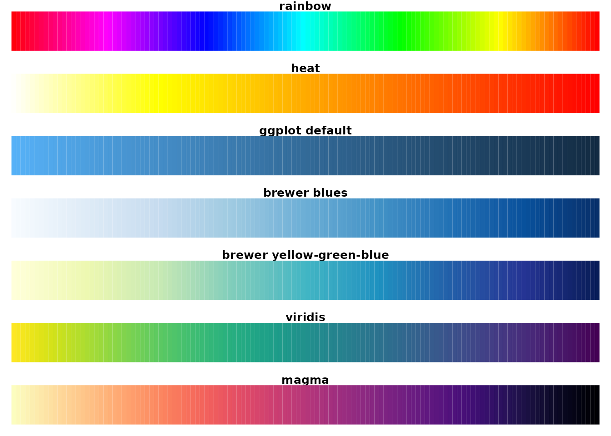
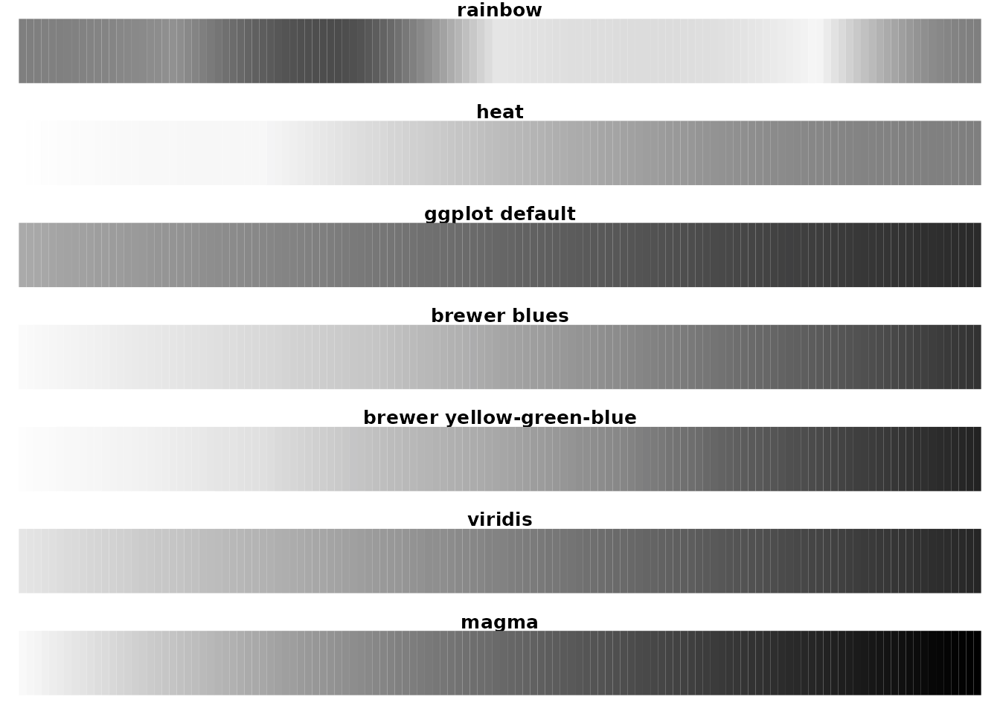
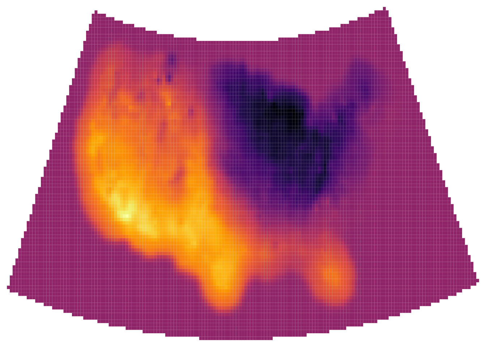
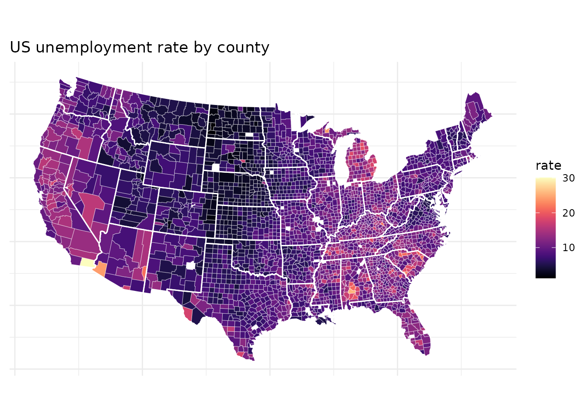
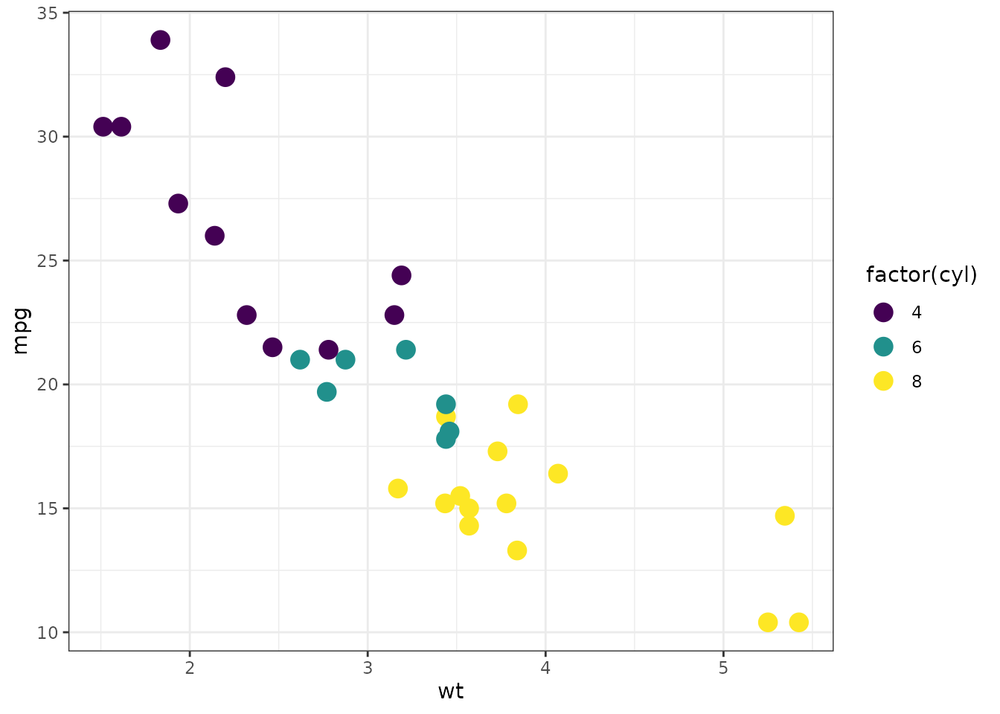

Introduction to the viridis color maps
Bob Rudis, Noam Ross and Simon Garnier
2021-04-14
Source:vignettes/intro-to-viridis.Rmd
intro-to-viridis.Rmdtl;dr
Use the color scales in this package to make plots that are pretty, better represent your data, easier to read by those with colorblindness, and print well in gray scale.
Install viridis like any R package:
install.packages("viridis")
library(viridis)For base plots, use the viridis() function to generate a palette:
x <- y <- seq(-8*pi, 8*pi, len = 40)
r <- sqrt(outer(x^2, y^2, "+"))
filled.contour(cos(r^2)*exp(-r/(2*pi)),
axes=FALSE,
color.palette=viridis,
asp=1)
For ggplot, use scale_color_viridis() and scale_fill_viridis():
library(ggplot2)
ggplot(data.frame(x = rnorm(10000), y = rnorm(10000)), aes(x = x, y = y)) +
geom_hex() + coord_fixed() +
scale_fill_viridis() + theme_bw()
Introduction
viridis, and its companion package viridisLite provide a series of color maps that are designed to improve graph readability for readers with common forms of color blindness and/or color vision deficiency. The color maps are also perceptually-uniform, both in regular form and also when converted to black-and-white for printing.
These color maps are designed to be:
- Colorful, spanning as wide a palette as possible so as to make differences easy to see,
- Perceptually uniform, meaning that values close to each other have similar-appearing colors and values far away from each other have more different-appearing colors, consistently across the range of values,
- Robust to colorblindness, so that the above properties hold true for people with common forms of colorblindness, as well as in grey scale printing, and
- Pretty, oh so pretty
viridisLite provides the base functions for generating the color maps in base R. The package is meant to be as lightweight and dependency-free as possible for maximum compatibility with all the R ecosystem. viridis provides additional functionalities, in particular bindings for ggplot2.
The Color Scales
The package contains eight color scales: “viridis”, the primary choice, and five alternatives with similar properties - “magma”, “plasma”, “inferno”, “civids”, “mako”, and “rocket” -, and a rainbow color map - “turbo”.
The color maps viridis, magma, inferno, and plasma were created by Stéfan van der Walt ([@stefanv](https://github.com/stefanv)) and Nathaniel Smith ([@njsmith](https://github.com/njsmith)). If you want to know more about the science behind the creation of these color maps, you can watch this presentation of viridis by their authors at SciPy 2015.
The color map cividis is a corrected version of ‘viridis’, developed by Jamie R. Nuñez, Christopher R. Anderton, and Ryan S. Renslow, and originally ported to R by Marco Sciaini ([@msciain](https://github.com/marcosci)). More info about cividis can be found in this paper.
The color maps mako and rocket were originally created for the Seaborn statistical data visualization package for Python. More info about mako and rocket can be found on the Seaborn website.
The color map turbo was developed by Anton Mikhailov to address the shortcomings of the Jet rainbow color map such as false detail, banding and color blindness ambiguity. More infor about turbo can be found here.

Comparison
Let’s compare the viridis and magma scales against these other commonly used sequential color palettes in R:
- Base R palettes:
rainbow.colors,heat.colors,cm.colors - The default ggplot2 palette
- Sequential colorbrewer palettes, both default blues and the more viridis-like yellow-green-blue

It is immediately clear that the “rainbow” palette is not perceptually uniform; there are several “kinks” where the apparent color changes quickly over a short range of values. This is also true, though less so, for the “heat” colors. The other scales are more perceptually uniform, but “viridis” stands out for its large perceptual range. It makes as much use of the available color space as possible while maintaining uniformity.
Now, let’s compare these as they might appear under various forms of colorblindness, which can be simulated using the dichromat package:
Desaturated

We can see that in these cases, “rainbow” is quite problematic - it is not perceptually consistent across its range. “Heat” washes out at bright colors, as do the brewer scales to a lesser extent. The ggplot scale does not wash out, but it has a low perceptual range - there’s not much contrast between low and high values. The “viridis” and “magma” scales do better - they cover a wide perceptual range in brightness in brightness and blue-yellow, and do not rely as much on red-green contrast. They do less well under tritanopia (blue-blindness), but this is an extrememly rare form of colorblindness.
Usage
The viridis() function produces the viridis color scale. You can choose the other color scale options using the option parameter or the convenience functions magma(), plasma(), inferno(), cividis(), mako(), rocket(), andturbo()`.
Here the inferno() scale is used for a raster of U.S. max temperature:
library(rasterVis)
library(httr)
par(mfrow=c(1,1), mar=rep(0.5, 4))
temp_raster <- "http://ftp.cpc.ncep.noaa.gov/GIS/GRADS_GIS/GeoTIFF/TEMP/us_tmax/us.tmax_nohads_ll_20150219_float.tif"
try(GET(temp_raster,
write_disk("us.tmax_nohads_ll_20150219_float.tif")), silent=TRUE)
us <- raster("us.tmax_nohads_ll_20150219_float.tif")
us <- projectRaster(us, crs="+proj=aea +lat_1=29.5 +lat_2=45.5 +lat_0=37.5 +lon_0=-96 +x_0=0 +y_0=0 +ellps=GRS80 +datum=NAD83 +units=m +no_defs")
image(us, col=inferno(256), asp=1, axes=FALSE, xaxs="i", xaxt='n', yaxt='n', ann=FALSE)
The package also contains color scale functions for ggplot plots: scale_color_viridis() and scale_fill_viridis(). As with viridis(), you can use the other scales with the option argument in the ggplot scales.
Here the “magma” scale is used for a cloropleth map of U.S. unemployment:
unemp <- read.csv("http://datasets.flowingdata.com/unemployment09.csv",
header = FALSE, stringsAsFactors = FALSE)
names(unemp) <- c("id", "state_fips", "county_fips", "name", "year",
"?", "?", "?", "rate")
unemp$county <- tolower(gsub(" County, [A-Z]{2}", "", unemp$name))
unemp$county <- gsub("^(.*) parish, ..$","\\1", unemp$county)
unemp$state <- gsub("^.*([A-Z]{2}).*$", "\\1", unemp$name)
county_df <- map_data("county", projection = "albers", parameters = c(39, 45))
names(county_df) <- c("long", "lat", "group", "order", "state_name", "county")
county_df$state <- state.abb[match(county_df$state_name, tolower(state.name))]
county_df$state_name <- NULL
state_df <- map_data("state", projection = "albers", parameters = c(39, 45))
choropleth <- merge(county_df, unemp, by = c("state", "county"))
choropleth <- choropleth[order(choropleth$order), ]
ggplot(choropleth, aes(long, lat, group = group)) +
geom_polygon(aes(fill = rate), colour = alpha("white", 1 / 2), size = 0.2) +
geom_polygon(data = state_df, colour = "white", fill = NA) +
coord_fixed() +
theme_minimal() +
ggtitle("US unemployment rate by county") +
theme(axis.line = element_blank(), axis.text = element_blank(),
axis.ticks = element_blank(), axis.title = element_blank()) +
scale_fill_viridis(option="magma")
The ggplot functions also can be used for discrete scales with the argument discrete=TRUE.
p <- ggplot(mtcars, aes(wt, mpg))
p + geom_point(size=4, aes(colour = factor(cyl))) +
scale_color_viridis(discrete=TRUE) +
theme_bw()
Gallery
Here are some examples of viridis being used in the wild:
James Curley uses viridis for matrix plots (Code):

Christopher Moore created these contour plots of potential in a dynamic plankton-consumer model: